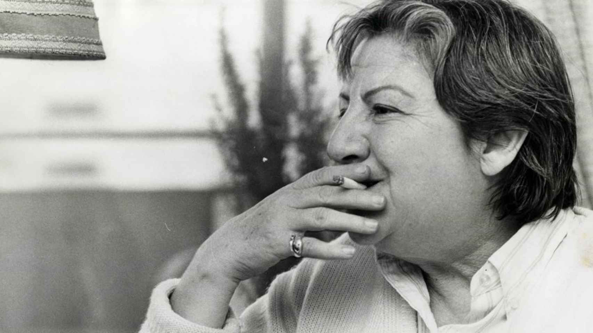
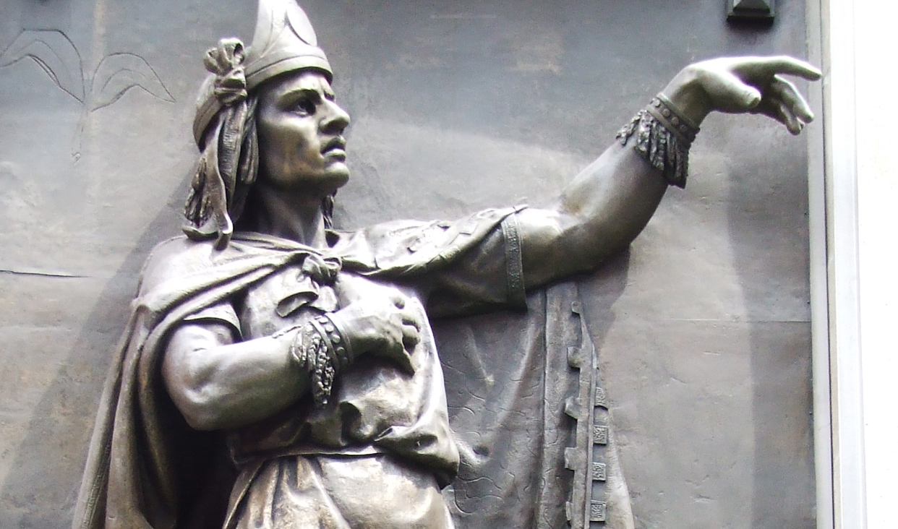

1. Aquí (Octavio Paz)

Mis pasos en esta calle
Resuenan
En otra calle
Donde
Oigo mis pasos
Pasar en esta calle
Donde
Sólo es real la niebla.
2. Síndrome (Mario Benedetti)

Todavía tengo casi todos mis dientes
casi todos mis cabellos y poquísimas canas
puedo hacer y deshacer el amor
trepar una escalera de dos en dos
y correr cuarenta metros detrás del ómnibus
o sea que no debería sentirme viejo
pero el grave problema es que antes
no me fijaba en estos detalles.
3. A un general (Julio Cortázar)

Región de manos sucias de pinceles sin pelo
de niños boca abajo de cepillos de dientes
Zona donde la rata se ennoblece
y hay banderas innúmeras y cantan himnos
y alguien te prende, hijo de puta,
una medalla sobre el pecho
Y te pudres lo mismo.
4. Despedida (Alejandra Pizarnik)

Mata su luz un fuego abandonado.
Sube su canto un pájaro enamorado.
Tantas criaturas ávidas en mi silencio
y esta pequeña lluvia que me acompaña.
5. Desvelada (Gabriela Mistral)

Como soy reina y fui mendiga, ahora
vivo en puro temblor de que me dejes,
y te pregunto, pálida, a cada hora:
«¿Estás conmigo aún? ¡Ay, no te alejes!»
Quisiera hacer las marchas sonriendo
y confiando ahora que has venido;
pero hasta en el dormir estoy temiendo
y pregunto entre sueños: «¿No te has ido?».
6. En las noches claras (Gloria Fuertes)

En las noches claras,
resuelvo el problema de la soledad del ser.
Invito a la luna y con mi sombra somos tres.
7. Deletreos de armonía (Antonio Machado)

Deletreos de armonía
que ensaya inexperta mano.
Hastío. Cacofonía
del sempiterno piano
que yo de niño escuchaba
soñando... no sé con qué,
con algo que no llegaba,
todo lo que ya se fue.
8. Recuerdo que dejo (Nezahualcoyotl)

¿Con qué he de irme?
¿Nada dejaré en pos de mi sobre la tierra?
¿Cómo ha de actuar mi corazón?
¿Acaso en vano venimos a vivir,
a brotar sobre la tierra?
Dejemos al menos flores
Dejemos al menos cantos.
9. Rima LX (Gustavo Adolfo Bécquer)
Mi vida es un erial,
flor que toco se deshoja;
que en mi camino fatal
alguien va sembrando el mal
para que yo lo recoja.
10. Las seis cuerdas (Federico García Lorca)

La guitarra
hace llorar a los sueños.
El sollozo de las almas
perdidas
se escapa por su boca
redonda.
Y como la tarántula,
teje una gran estrella
para cazar suspiros,
que flotan en su negro
aljibe de madera.
11. "Alma desconsolada" (Ale Ramírez)

Alma que se esconde
en los más oscuros sentimientos
Tras de un amor perdido
y un corazón lleno de desilusión
Que duele hasta en lo más profundo de sus entrañas
Queriendo así encontrar su amor en medio de sus cenizas.